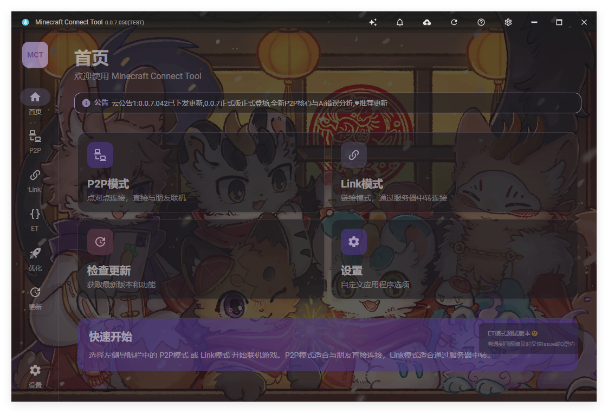
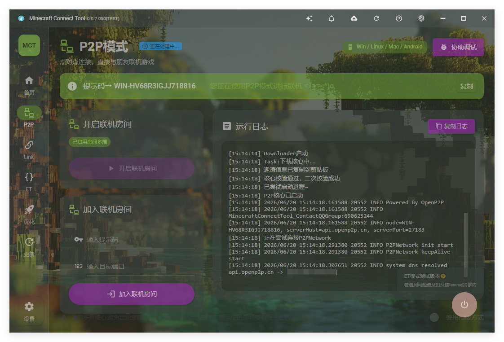
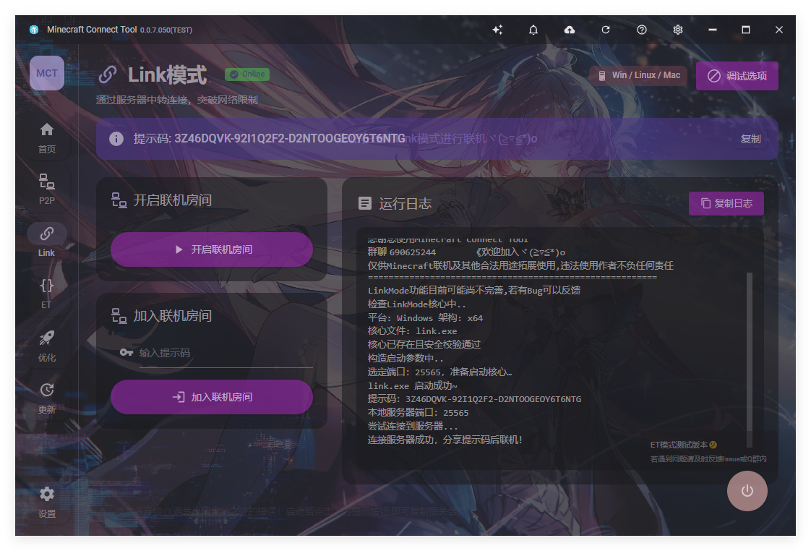
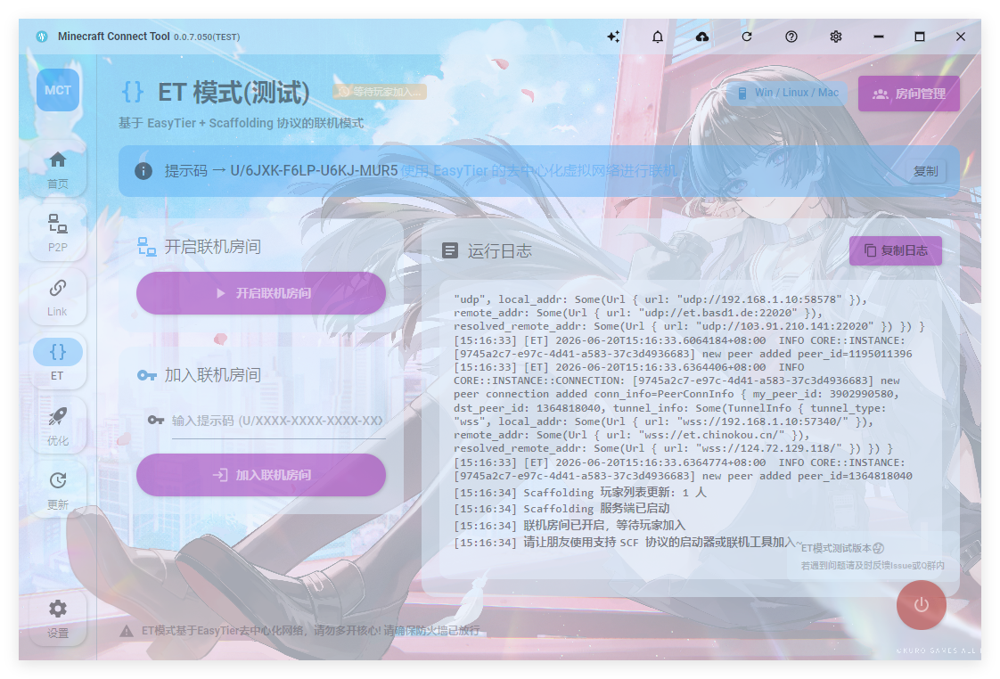
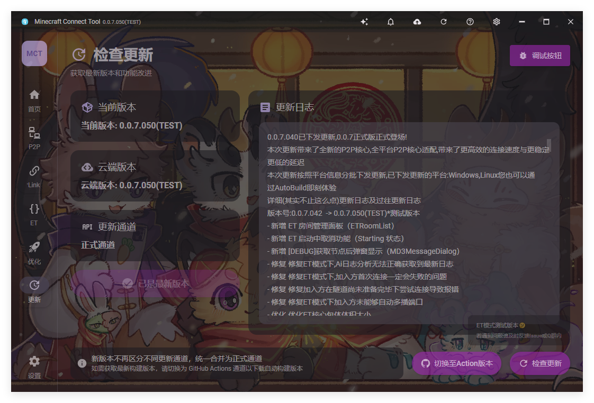
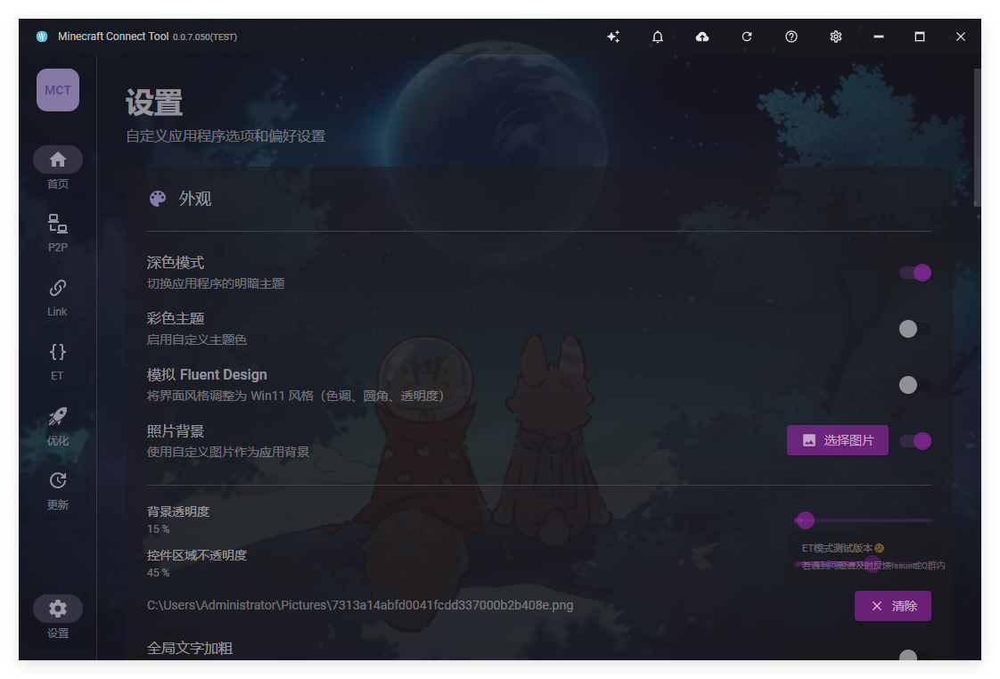

基于 OpenP2P、MCILMLink、EasyTier 的轻量便携联机工具，一键创建/加入联机房间，支持 P2P / Link / ET 三种联机模式，无需复杂配置，即刻开启冒险。

简洁易用的界面，强大稳定的内核，让每一次联机都顺畅无阻
一键创建或加入联机房间，自动生成提示码，邀请好友即刻加入，无需繁琐的手动配置。

基于 OpenP2P 的高速点对点连接，NAT 穿透打洞，低延迟直连，畅享流畅游戏体验。

通过服务器中转连接，突破网络限制，适用于 NAT 严格或 P2P 打洞失败的场景。

基于 EasyTier + Scaffolding 协议的去中心化虚拟网络联机模式，全新联机体验。

智能检测最新版本，支持多通道更新，云端版本同步，一键获取最新功能和改进。

深色模式、彩色主题、照片背景、透明度调节，支持 Fluent Design 风格界面定制。
根据不同网络环境，选择最适合的联机方式
基于 OpenP2P 的点对点直连方案，房主创建房间生成提示码，加入方输入提示码与端口即可连接。支持 TCP/UDP 协议切换，NAT 类型自动检测。
基于 Link 协议的中继联机方案，通过公共服务器转发数据，适用于 NAT 严格或 P2P 打洞失败的场景，确保任何网络环境都能稳定联机。
基于 EasyTier 的全新联机方案，采用 Scaffolding 协议实现虚拟局域网，支持自动公共节点发现、玩家列表实时同步、虚拟 IP 互通。
采用 .NET 8 生态与 Avalonia 11 MVVM，跨平台、高性能、易维护
跨平台 UI 框架，MVVM 架构，Fluent Design 风格界面
长期支持版本，高性能运行时，原生跨平台部署
现代化语言特性，配合 MVVM 架构模式
集三联机方案于一体，最大程度适配不同网络环境
获取帮助、分享经验、参与讨论